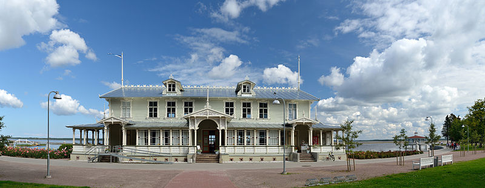

Haapsalu
Pärast Vana-Pärnu mahapõletamist leedulaste poolt 1263. aastal otsustas Saare-Lääne piiskop Hermann I piiskopkonna uue keskuse rajada põhja poole turvalisemale alale. 1279 sai Haapsalu linnaõigused
Haapsalu vanalinn asub kahe oosiga poolsaarel, mis loode suunas jätkub mandriga ühinenud laidude ahelikuna, mida kohalikud nimetavad holmideks. Holmide vahele on jäänud madalad lahed – Suur ja Väike viik. Haapsalu on kolmest küljest merega piiratud linn, mille suurus on kasvanud 10,59 ruutkilomeetrile.
Viimastel aastakümnetel toimunud linna laienemise tõttu maa suunas on linna keskpunkt nihkunud Haapsalu piiskopilinnuse juurest praeguse kaubanduskeskuse juurde.
Haapsalu on vaikne suvituskoht Haapsalu lahe ääres, mis tänu oma madalale veele soojeneb suhteliselt kiiresti. Doktor Karl Abraham Hunnius võttis kasutusele Haapsalu ravimuda. Haapsalu ravimuda ja meri on siia puhkama meelitanud paljud tuntud inimesed üle maailma.
 Miks tulla Haapsalusse - 10 põhjust